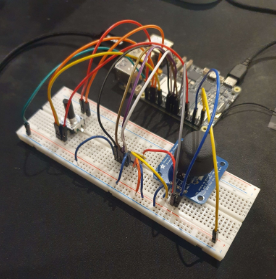
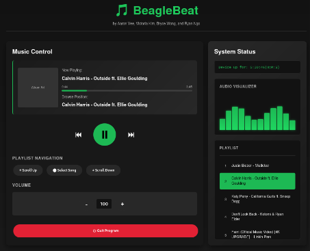

This project was an embedded audio player on runnning ARM Linux via a BeagleY-AI Board. The music player and hardware components were coded in C and the website was coded using Javascript, HTML and CSS. The player also utilized physical controls consisting of a joystick and a potentiometer wired to a ADC chip. The project was done in a 4-member team in a Linux Debian virtual machine. The player utilized threads, buffers, and filters.

Image of the wiring of the Audio Player

Image of the associated website
The main thing I learned was Javascript. One of my contributions was to the web component, primarily though the music control and the audio visualizer as can be seen seen in the image above. Additionally, this project further developed my skills working in Linux enviroments, such as creating scripts, editing the working enviroment, and working with threads.
Heads up! Bombs away! Jarate! "I'm gonna turn ya into colored rain."